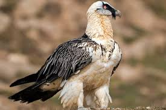
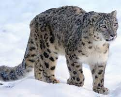

The bearded vulture (Gypaetus barbatus), also known as the lammergeier and ossifrage, is a very large bird of prey and the only member of the genus Gypaetus. This bird is also identified as Huma bird or Homa bird in Iran and north west Asia. Traditionally considered an Old World vulture, it actually forms a separate minor lineage of Accipitridae together with the Egyptian vulture (Neophron percnopterus), its closest living relative. It is not much more closely related to the Old World vultures proper than to, for example, hawks, and differs from the former by its feathered neck. Although dissimilar, the Egyptian and bearded vulture each have a lozenge-shaped tail—unusual among birds of prey. The population of this species continues to decline. In 2004, it was classified by the IUCN Red List as least concern; since 2014, it is listed as near threatened.[1] The bearded vulture is the only known vertebrate whose diet consists almost exclusively (70 to 90 percent) of bone.[3] It lives and breeds on crags in high mountains in southern Europe, the Caucasus,[4][5][6] Africa,[7] the Indian subcontinent, and Tibet, laying one or two eggs in mid-winter that hatch at the beginning of spring. Populations are residents

The snow leopard (Panthera uncia), also known as the ounce, is a felid in the genus Panthera native to the mountain ranges of Central and South Asia. It is listed as Vulnerable on the IUCN Red List because the global population is estimated to number fewer than 10,000 mature individuals and is expected to decline about 10% by 2040. It is threatened by poaching and habitat destruction following infrastructural developments. It inhabits alpine and subalpine zones at elevations of 3,000–4,500 m (9,800–14,800 ft), ranging from eastern Afghanistan, the Himalayas and the Tibetan Plateau to southern Siberia, Mongolia and western China. In the northern part of its range, it also lives at lower elevations. Taxonomically, the snow leopard was long classified in the monotypic genus Uncia. Since phylogenetic studies revealed the relationships among Panthera species, it has been considered a member of that genus. Two subspecies were described based on morphological differences, but genetic differences between the two have not been confirmed. It is therefore regarded as a monotypic species.